Hardware Environment
Drone Selection Process
Several drones were compared using custom criteria for drone development. These custom criteria are based on ease of use and programmability. The Dimensions criterion aims to minimize the drone size and weight. The Reconfigurable criterion investigates the modularity of the hardware layout. The Programmable criterion looks at the available interfaces for communicating with the firmware. The Autonomous Flight criterion looks at the compatibility of state estimation and trajectory planning algorithms.
| Criteria | Snapdragon | Bitcraze | Tello | Custom Flight | |
| Flight Pro | Crazyflie | Drone | Controller | ||
| Dimensions | ◎ ◉ ◉ ◉ ◉ | ◎ ◎ ◎ ◎ ◎ | ◎ ◎ ◎ ◎ ◉ | ◎ ◎ ◉ ◉ ◉ | |
| Reconfigurable | ◎ ◎ ◎ ◎ ◉ | ◎ ◎ ◎ ◎ ◉ | ◎ ◉ ◉ ◉ ◉ | ◎ ◎ ◎ ◎ ◉ | |
| Programmable | ◎ ◎ ◎ ◉ ◉ | ◎ ◎ ◎ ◎ ◉ | ◎ ◎ ◎ ◉ ◉ | ◎ ◎ ◉ ◉ ◉ | |
| Autonomous Flight | ◎ ◎ ◎ ◉ ◉ | ◎ ◎ ◎ ◎ ◉ | ◎ ◎ ◎ ◎ ◉ | ◎ ◉ ◉ ◉ ◉ | |
| Selection |
The Crazyflie Drone has several advantages over other drones.
Autonomous Flight. State estimation and trajectory planning are managed by the Crazyflie firmware. The operating procedure is simplified to sending setpoint commands from a remote PC. (Chaari et al., 2021)
Programmability. At the moment of writing, there are two APIs known to send high-level commands to the drone. (“Crazyflie Documentation (Accessed 30 September 2021),” 2021)
Dimensions. Due to our space constraints, a small, light drone is preferable. Our payload of motion-capture markers brings the Crazyflie’s mass to 33 grams.
Reconfigurability. The Crazyflie is easily assembled and maintainable. It is compatible with a range of sensor modules for different activities. (“Crazyflie Documentation (Accessed 30 September 2021),” 2021)
Flight Arena and Spatial Localization
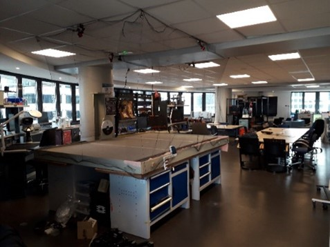 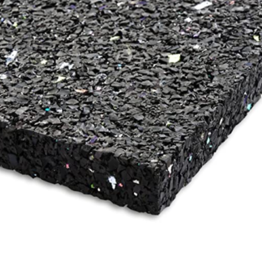
The Flight Area (Figure [fig:flight_arena]) measures 3 x 2 meters, with a table-to-ceiling distance of 1.3m. In order to dampen the impact of falling drones, the table is layered with anti-vibration cork material (Figure [fig:cork]).
Optitrack (“Crazyflie Documentation (Accessed 30 September 2021),” 2021) was adopted as the Motion Capture since the equipment was available in the laboratory. It is compatible with the swarm management solution of Section 1.5.5. Optitrack uses a Point Cloud reconstruction engine (Point, n.d.). That is, it triangulates two-dimensional points from camera images into coordinates in a three-dimensional space. For this purpose, four Flex 13 cameras are set up on the Flight Arena (as seen in Figure [fig:flight_arena]).
The Flex 13 cameras (Optitrack Documentation Version 2.2 (Accessed 30 July 2021), 2021) are infrared cameras, and so they must have an unobstructed view of any tracked object.
The exact positions of the cameras give a certain coverage of the Flight Arena. The next section determines how much of the Flight Arena is localized by the cameras.
Lightray Coverage Study
We investigate how much of the flight arena is localized by the motion capture. The drones can only be flown in a space covered by the infrared cameras, therefore we perform a design study to maximize this flight space.
Lightray Simulation
A model is designed in Solidworks (Optitrack Documentation Version 2.2 (Accessed 30 July 2021), 2021) to simulate the coverage of our cameras. Figure [fig:45] simulates the camera coverage on a table the size of the Flight Arena. A key factor is the camera’s pitch angle down from the horizontal. Figure [fig:45] compares an orientation at 45° from the horizontal to one at 30 degrees.
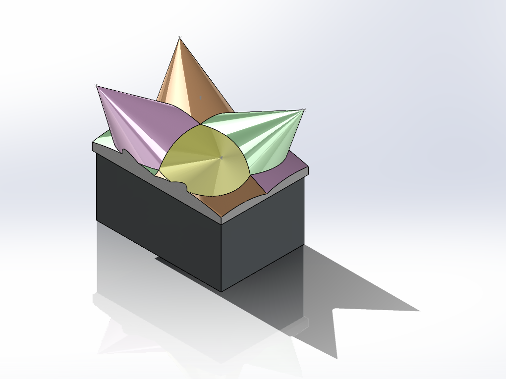 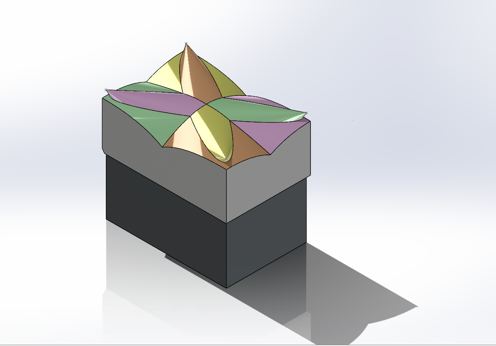
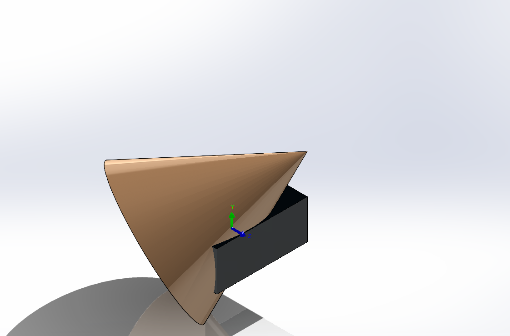 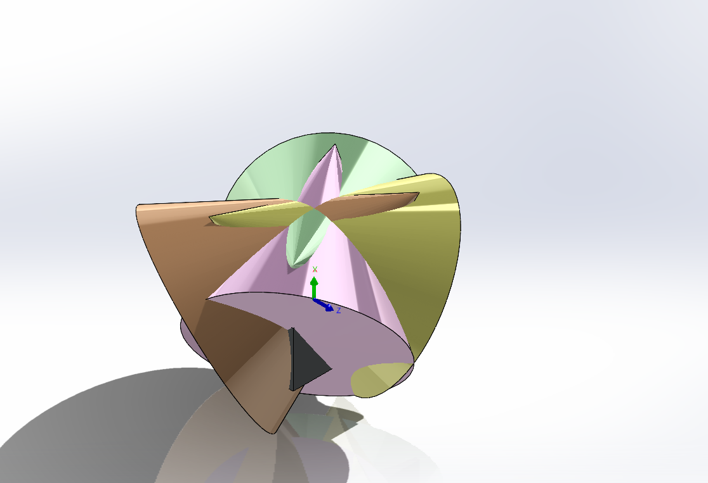
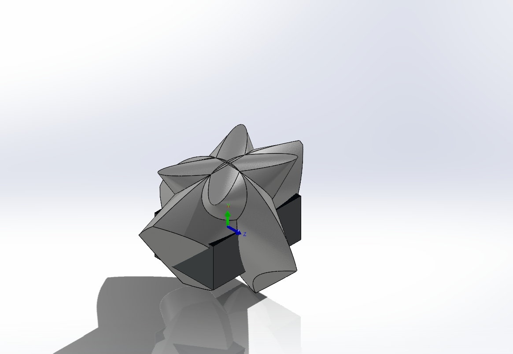 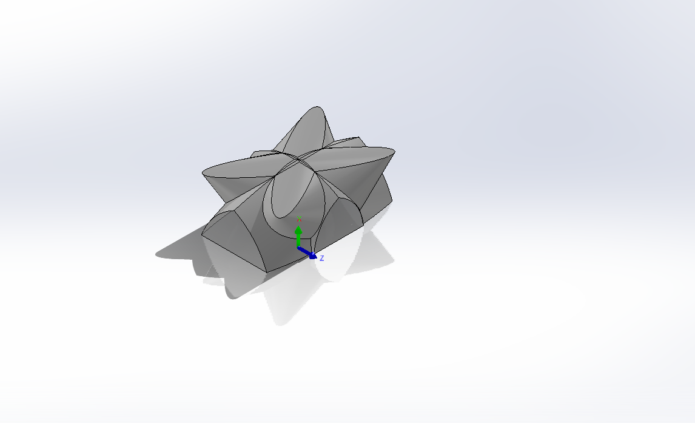
The coverage percentage is determined as the volume of space localized by the flight cameras over the total usable volume above the Flight Arena. Figure [fig:intersection_procedure] shows the modelling process of ray coverage volumes. The design requirements are as follow:
The cameras are placed above the table corners. within the net region so as to have a clear view of the drones when the net is lowered
There are a total of 4 cameras available during motion capture installation. The flight space measures 3×2×1.3 m.
Flex 13 cameras have a 56° field of view, and this is replicated in simulation (Figure [fig:intersection_procedure]).
In order to triangulate a position, the motion capture requires a minimum of 2 rays to intersect (Dassault Systems, 2010).
These volumes can then be determined in Solidworks using its Volumetric Tool (Optitrack Documentation Version 2.2 (Accessed 30 July 2021), 2021). For a pitch angle of 30o, The volumes of the flight space and of the intersection area above, are respectively of 7.8 m2 and 6.134 m2. As a result, we determine that the usable region for flight is 78.64% of the 3×2×1.3 m flight space. This demonstrates that 20% of the flight space is unusable. This is not surprising, considering that 4 cameras are directly above the table and constrained by the netting.
Coverage Optimisation Study
The camera’s pitch angle is varied to determine the point of optimal coverage. Figure [fig:volumes] shows the volumes generated during the study.
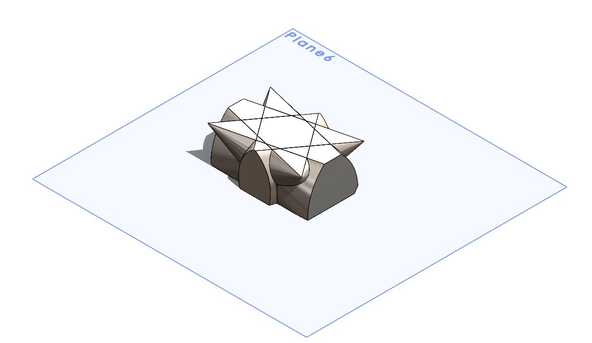 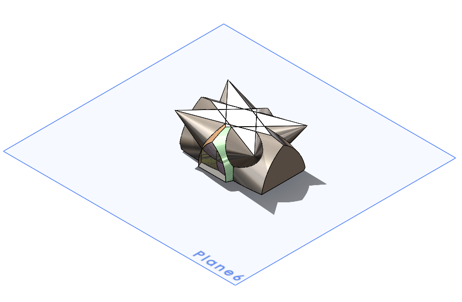
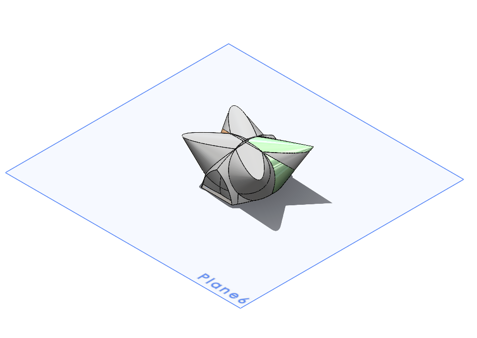 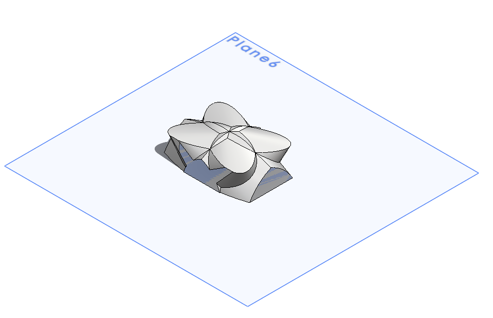
The study has two parts. The first study varies by increments of 5o, in order to determine the range of volume maxima. The second study finetunes by increments of 1o, with the help of a Solidworks Design Study (Solidworks 2021 Documentation (Accessed 30 July 2021), 2021). This simulation tool is used to generate volumes automatically. It has trouble generating volumes if the angle increments are too large, therefore the first study is done manually.
| Pitch | Volume | % | Max | |
| (deg) | (mm3) | Covered | Range | |
| 10 | 6 607 805 800.35 | 84.7154 | ◉ | |
| 15 | 6 970 142 481.03 | 89.3608 | ◎ | |
| 20 | 7 014 173 181.97 | 89.9253 | ◎ | |
| 25 | 6 804 720 310.30 | 87.2400 | ◎ | |
| 30 | 4 855 500 995.33 | 62.2500 | ◉ | |
| 35 | 5 006 693 602.87 | 64.1884 | ◉ | |
| 40 | 3 747 076 773.66 | 48.0394 | ◉ |
| Pitch | Volume | % | Max | |
| (deg) | (mm3) | Covered | Range | |
| 16 | 7007549683.27 | 89.8404 | ◉ | |
| 17 | 7034381844.70 | 90.1844 | ◉ | |
| 18 | 7050625519.44 | 90.3926 | ◎ | |
| 19 | 7056144612.83 | 90.4634 | ◎ | |
| 20 | 7014172714.71 | 89.9253 | ◎ | |
| 21 | 6999358686.15 | 89.7354 | ◉ | |
| 22 | 6972124192.42 | 89.3862 | ◉ |
Through these studies, the coverage volume was increased from 78.64% by % up to 89.95%, and by % to . This demonstrates that about 10% of the flight space is still out of reach. While the netting constraint forces the cameras to have this inconvenience, the study could be further optimised by varying the yaw angle of the cameras and moving them away from the corners.
Flight Stability Tests
Tests of the stability of robotic systems are routinely performed to measure their robustness to external forces. This is a key challenge in drone development (Solidworks 2021 Documentation (Accessed 30 July 2021), 2021), where a drone maintains dynamic stability by counterbalancing six directions of freedom, as opposed to two for wheeled systems in static stability.
The Crazyswarm ecosystem (“Crazyflie Documentation (Accessed 30 September 2021),” 2021) makes use of a position and rate controller for each drone in its swarm. This means that a setpoint is sent to each drone separately, each correcting their current pose towards the setpoint. The streaming setpoints are broadcasted from one or more antennas. As the number of drones in the swarm increases, they receive less frequent broadcasts from the antenna (“Crazyflie Documentation (Accessed 30 September 2021),” 2021).
The purpose of this test is to determine the response of the drone’s position and angle controllers to the natural disturbance during hovering. This experiment investigates the effect of antenna distance and interference on drone flight. With multiple drones to a single antenna, we evaluate if the system demonstrates any performance limits.
Hypothesis
The hypothesis is as such: the error in drone pose will correlate with the distance of the drones from the antenna.
Prediction
A hover stability test is a good measure of system performance since it requires quick readjustments of the drone to counter natural disturbances during hovering. In (Preiss et al., 2017), determine the performance of their flight controller by comparing the attitude of the drone in relation to the demanded null value of angular rotations. In contrast, our input is a setpoint. The output is a set of translation and rotational angles relative to a demanded null value for translation and rotation. This output is graphed as a deviation over time. The shape of the response charts are associated with flight stability over time.
Experiment Methodology
Hover stability is examined on the Flight Arena. The telemetry recording and external video cameras are programmed to launch with the swarm control interface. Three drones are hovered in the Flight Arena at an altitude of around 1 m. It was possible to record a 20-s long autonomous flight during which the flight controller attempted to stabilize the quadcopter. During that time, the quadcopter remained within a radius of two meters from its takeoff location.
Constraints: In preparation for the flight, each of the three drones are inspected for minimal positional displacement of less than (1cm + 0.01 rad). This ensures fully functional position controllers for the drones.
Results
The flightpaths of the three drones are plotted alongside . The topview and the sideview are featured below.
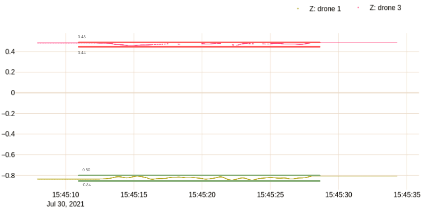 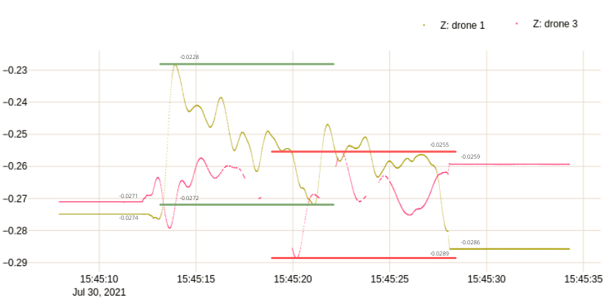
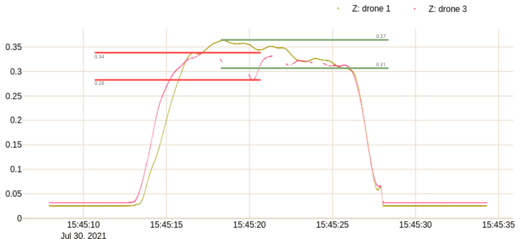 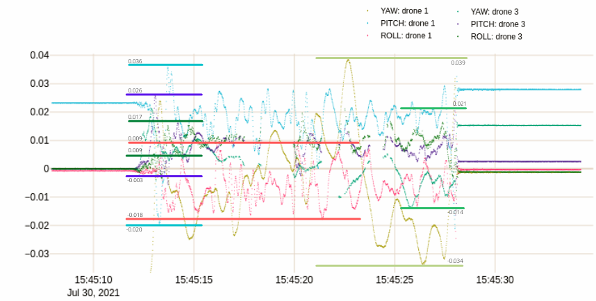
The flightpaths are smooth and generally show very minimal jerking. There are very little discontinuities, attesting to a continuous localization process.
| Criteria | Drone 1 | Drone 2 | |||||
| Min | Max | Range | Min | Max | Range | ||
| X | -0.84 | -0.80 | 0.04 | 0.44 | 0.48 | 0.04 | |
| y | -0.0272 | -0.0228 | 0.0044 | -0.0289 | -0.0255 | 0.0034 | |
| Z | 0.31 | 0.37 | 0.06 | 0.28 | 0.34 | 0.06 | |
| Roll | -0.018 | 0.009 | 0.027 | 0.009 | 0.017 | 0.008 | |
| Pitch | -0.020 | 0.036 | 0.056 | -0.003 | 0.026 | 0.029 | |
| Yaw | -0.034 | 0.039 | 0.073 | -0.014 | 0.021 | 0.035 | |
| Selection | \ding{55} | Ϩ |
○ ◉ Ϩ ⨯ Drone 2 has less variation in both translations and rotations than Drone 1. This is confirmed in Table [tab:stability_comparison]. Drone 2 is more stable in this test than Drone 1. The sample hover error is .
The discrepancy between the two drones could be attributed to a number of factors. This work may be improved with a second test, where the two drones’ positions are inversed. All in all, the flight is substantially accurate, with a peak translation of 6cm.
Conclusion of Test
Drone 2 is further from the arena and exhibits more stability. The drone that is furthest from the antenna does not have more pose error, and the hypothesis is rejected.